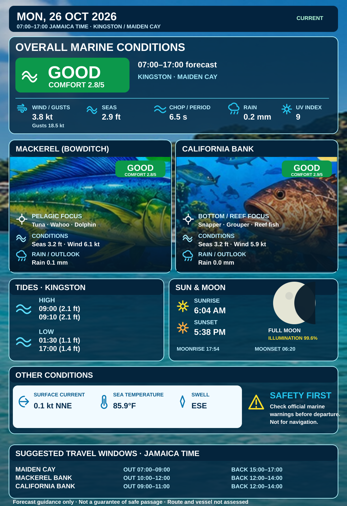

MADE FOR JAMAICA'S WATERS
A brighter day on the water.
Marine forecasts, fishing bank conditions and coastal insights all in one place, built for the way Jamaica gets out on the sea.
KINGSTON · PORT ROYAL · OFFSHORE BANKS · BEYOND
TODAY'S MARINE OUTLOOKDAILY IMAGE

Today's forecast image is not available yet. Use the forecast tools below for current guidance.
Latest published forecast image · View full size ↗
JAMAICA • PLAN • FISH • EXPLOREDISCOVER MORE ↓
JAMAICA'S FISHING GROUNDS
Your bank. Your forecast.
Select a location to view its latest pre-rendered marine forecast, with the live forecast always one click away.
MARINE WEATHER JAMAICAPLAN · FISH · EXPLORE
SAME SEA. BRIGHTER DAYS.
Select a fishing bank
Checking latest published image…
Forecast images are refreshed on a three-hour schedule when valid data is available. Always check the timestamp and official advisories. Not for navigation.